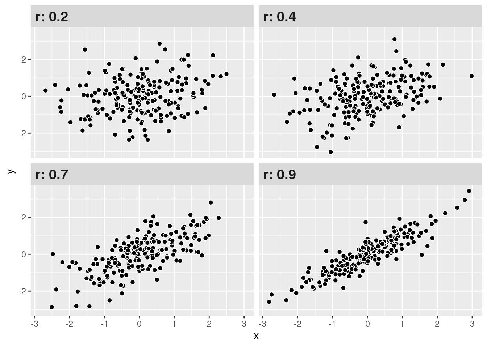
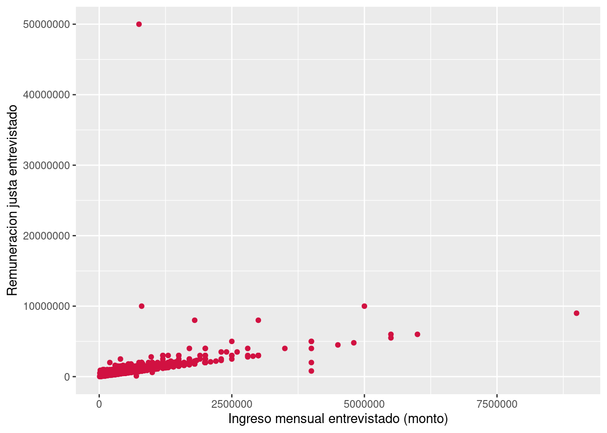
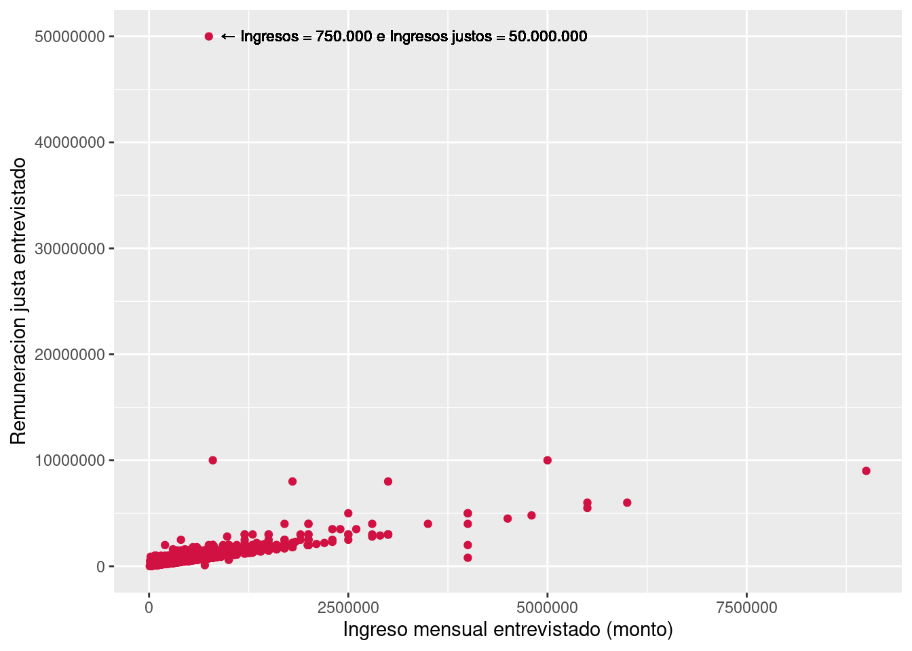
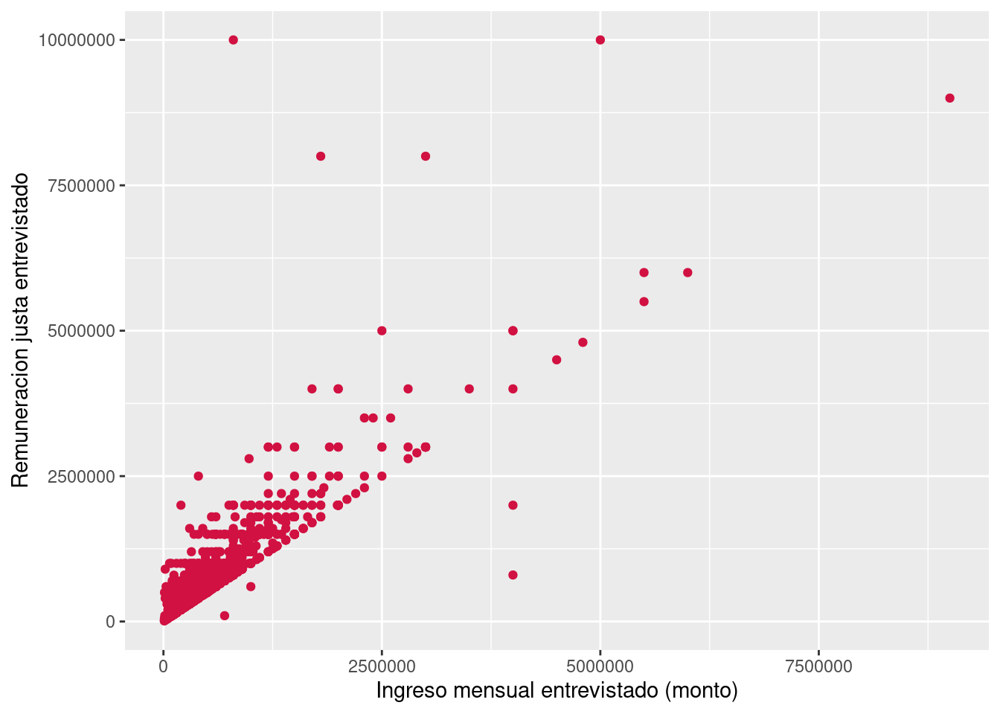
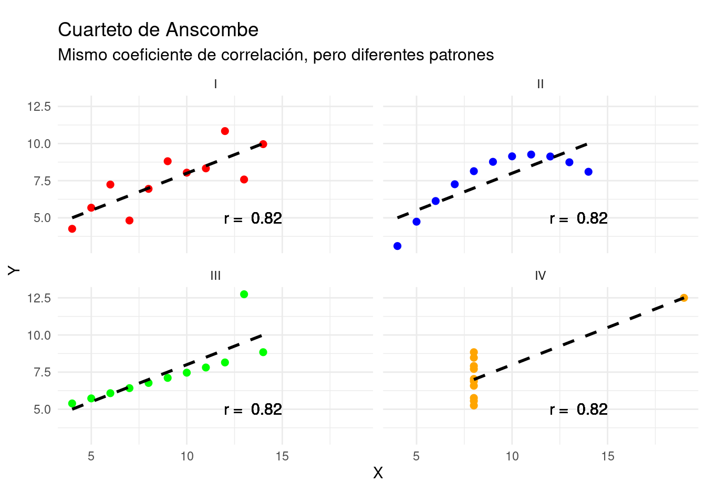
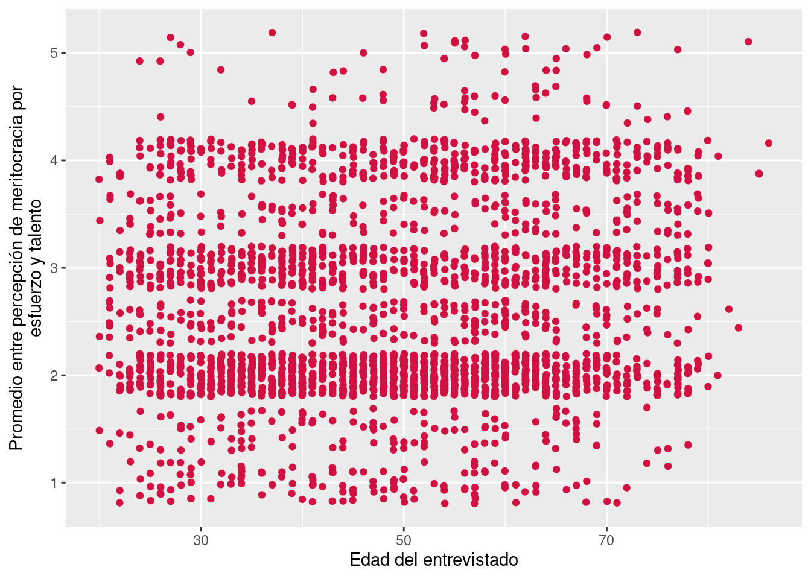

pacman::p_load(tidyverse, # Manipulacion datos
sjPlot, # Graficos
rstatix, # Test estadísticos
broom) # Tablas
options(scipen = 999) # para desactivar notacion cientifica
rm(list = ls()) # para limpiar el entorno de trabajoPráctico 3: Correlación de Pearson
Sesión del martes, 1 de octubre de 2024
Objetivo de la práctica
El propósito de esta guía es introducir el coeficiente de correlación de Pearson como una herramienta para la investigación, enfocándonos en su aplicación en R. A lo largo del ejercicio, aprenderemos a:
- Preparar los datos,
- Estimar el coeficiente de Pearson en R,
- Interpretar el tamaño del efecto,
- Visualizar la relación entre variables mediante gráficos,
- Aplicar la correlación en inferencia estadística,
- El rol del coeficiente de determinación, y
- Reconocer una las principales limitaciones del coeficiente de Pearson.
Utilizaremos un ejemplo que desarrollaremos progresivamente para ilustrar cada paso. Al finalizar, se propondrá un ejercicio autónomo que deberá resolverse de manera individual o grupal, aplicando los conceptos vistos en clases y en esta guía.
Recursos de la práctica
En esta práctica trabajaremos con los datos del Estudio Longitudinal Social de Chile (ELSOC) del año 2021, elaborado por COES. Para este ejercicio, obtendremos directamente esta base desde internet. No obstante, también es posible acceder a la misma información a través del siguiente enlace: ELSOC 2021. Desde allí, se puede descargar el archivo que contiene la base de datos ELSOC 2021.
1. Preparación de datos
Comencemos por preparar nuestros datos. Iniciamos cargando las librerías necesarias.
Cargamos los datos directamente desde internet.
# Cargar bbdd pública de ELSOC
load(url("https://dataverse.harvard.edu/api/access/datafile/6160180"))A continuación, exploramos la base de datos elsoc_2021.
names(elsoc_2021) # Nombre de columnas [1] "idencuesta" "ola" "version"
[4] "muestra" "cuestion_mig" "cuestion_completo"
[7] "segmento" "comuna" "comuna_cod"
[10] "region" "region_cod" "estrato"
[13] "ponderador01" "ponderador02" "fact_exp01"
[16] "fact_exp02" "r01_01" "r01_02"
[19] "r01_03" "r01_04" "r01_05"
[22] "r01_06" "r01_07" "r01_08"
[25] "r01_09" "r01_10" "r01_11"
[28] "r01_12" "r01_13" "r03_01"
[31] "r03_02" "r03_03" "r03_04"
[34] "r03_05" "r03_06" "r03_07"
[37] "r03_08" "r03_09" "r04_01"
[40] "r04_02" "r04_03" "r04_04"
[43] "r09" "r10" "r11"
[46] "r12_01" "r12_02" "r12_03"
[49] "r12_04" "r12_05" "r12_06"
[52] "r12_07" "r16" "r17"
[55] "r18_01" "r18_02" "t01"
[58] "t05" "t08" "t09_01"
[61] "t09_02" "t09_03" "t10"
[64] "t11_01" "t11_02" "t11_03"
[67] "t11_04" "t12" "t14"
[70] "c01" "c02" "c03"
[73] "c04" "c05_01" "c05_02"
[76] "c05_03" "c05_05" "c05_07"
[79] "c05_08" "c05_13" "c07_01"
[82] "c07_02" "c07_03" "c07_04"
[85] "c07_05" "c07_06" "c07_07"
[88] "c07_08" "c08_02" "c08_04"
[91] "c08_05" "c10_01" "c10_02"
[94] "c10_03" "c13" "c14_01"
[97] "c14_02" "c15" "c18_04"
[100] "c18_05" "c18_06" "c18_07"
[103] "c18_08" "c18_09" "c18_10"
[106] "c18_11" "c18_12" "c18_13"
[109] "c20" "c20_otro" "c22"
[112] "c25" "c30" "c32_01"
[115] "c32_02" "c33" "c34"
[118] "c35_01" "c35_02" "c35_03"
[121] "c35_04" "c37_02" "c37_04"
[124] "c37_05" "c37_09" "c37_10"
[127] "c38" "c40_01" "c40_02"
[130] "c40_03" "c40_04" "c40_05"
[133] "c40_06" "c41_01" "c41_02"
[136] "c41_03" "c41_04" "c42_01"
[139] "c42_02" "c42_03" "c42_04"
[142] "c43" "c44" "c45"
[145] "c46_01" "c46_02" "c46_03"
[148] "c46_04" "c47" "c48"
[151] "d01_01" "d01_02" "d01_03"
[154] "d01_04" "d03_01" "d03_02"
[157] "d04_01" "d04_02" "d05_01"
[160] "d05_02" "d05_03" "d05_04"
[163] "d06" "d10" "d11"
[166] "d12" "d16" "d17"
[169] "d18" "d19" "d20"
[172] "d21" "d22" "d25_01"
[175] "d25_02" "d25_03" "d25_04"
[178] "d25_05" "d25_06" "d26_03"
[181] "d26_04" "d28" "g01_01"
[184] "g01_02" "g01_03" "g01_04"
[187] "g01_05" "g02_01" "g02_02"
[190] "g02_03" "g02_04" "g02_05"
[193] "c19_01" "c19_02" "c19_03"
[196] "c19_04" "f01_05" "f05_03"
[199] "f05_04" "f05_06" "f05_07"
[202] "s01" "s02" "s03"
[205] "s04" "s06" "s07b"
[208] "s08" "s09" "s10"
[211] "s11_01" "s11_02" "s11_03"
[214] "s11_04" "s11_05" "s11_06"
[217] "s11_07" "s11_08" "s11_09"
[220] "s12" "s14" "s31"
[223] "m0_sexo" "m0_edad" "m01"
[226] "m02" "m03" "ciuo08_m03"
[229] "m04" "ciiu4_m04" "m05"
[232] "m06" "m07" "m08"
[235] "m09" "m10" "m11"
[238] "m12" "m13" "m14b"
[241] "m15" "m16" "m17"
[244] "m18" "m18_otro" "m19"
[247] "m20" "m21" "m22"
[250] "ciuo08_m22" "m23" "ciiu4_m23"
[253] "m24" "m25" "m26"
[256] "m27" "m28" "m29"
[259] "m30b" "m31_02" "m31_03"
[262] "m32" "m33" "m33_otro"
[265] "m36" "m36_otro" "m38"
[268] "m38_otro" "m39" "m41"
[271] "m42_01" "m42_02" "m42_03"
[274] "m42_04" "m42_04_otro" "m43"
[277] "m44" "m54" "m60"
[280] "m61" "m62" "m63_01"
[283] "m63_02" "m63_03" "m64_01"
[286] "m64_02" "m65" "idencuestador"
[289] "varios_enc" "sexo_enc" "edad_enc"
[292] "nac_enc" "educ_enc" "exp_campo_enc"
[295] "annio_entr" "mes_entr" "dia_entr"
[298] "n_visitas_entr" "inf_entr_dur" "mod_t_dur"
[301] "mod_r_dur" "mod_c_dur" "mod_d_dur"
[304] "mod_f_dur" "mod_g_dur" "mod_s_dur"
[307] "mod_m_dur" "contacto_dur" "presentacion_dur"
[310] "consentimiento_dur" "superv" dim(elsoc_2021) # Dimensiones[1] 2740 311Contamos con 311 variables (columnas) y 2740 observaciones (filas).
Ahora, realizaremos un pequeño procesamiento de nuestros datos con dplyr y sjlabelled, todo de una vez mediante el uso de pipes %>%. Para recordar los pasos para el procesamiento de datos, revisar el curso anterior.
# Procesemos la bbdd quedandonos solo con algunas variables de interés
proc_elsoc <- elsoc_2021 %>%
dplyr::select(
idencuesta,
ing_per = m13,
ing_per_just = m15,
edad = m0_edad,
mesfuerzo = c18_09,
mtalento = c18_10
) %>% # seleccionamos
dplyr::mutate(
across(ing_per:mtalento, ~ if_else(. %in% c(-666, -777, -888, -999), NA, .)), # Recodificar a NA
pmerit = (mesfuerzo + mtalento) / 2 # Crear nueva variable
) %>% # recodificamos y transformamos
labelled::set_variable_labels(
pmerit = "Promedio entre percepción de meritocracia por esfuerzo y talento"
) # etiquetamosVeamos cómo quedó nuetras base procesada proc_elsoc
head(proc_elsoc) idencuesta ing_per ing_per_just edad mesfuerzo mtalento pmerit
1 1101011 NA NA 69 2 2 2
2 1101012 NA NA 65 2 2 2
3 1101013 NA NA 30 4 4 4
4 1101021 600000 1000000 55 3 3 3
5 1101023 NA 1000000 65 2 2 2
6 1101032 NA NA 58 2 2 22. Correlación de Pearson
Recordemos…
El coeficiente de correlación de Pearson es una medida estandarizada de covarianza que nos muestra la asociación lineal (sentido y fuerza) entre dos variables continuas. En otras palabras, nos permite conocer cómo y cuánto se relaciona la variación de una variable, con la variación de otra variable.
Sus valores oscilan entre -1 y 1, donde:
\(r\) = 1: Correlación positiva perfecta. Cuando una variable aumenta, la otra también aumenta.
\(r\) = -1: Correlación negativa perfecta. Cuando una variable aumenta, la otra disminuye.
\(r\) = 0: No hay correlación lineal entre las variables. No hay una relación lineal discernible entre los cambios en las variables.
Cuanto más cercano esté el valor de \(r\) a 1 o -1, más fuerte será la correlación. Cuanto más cercano esté a 0, más débil será la correlación.

Formula de la correlación
\[ Correlacion = r = \frac{\sum_{i=1}^{n}(x_i - \bar{x})(y_i - \bar{y})} {(n-1)\sigma_x \sigma_y } \]
Ejemplo
El coeficiente de correlación de Pearson es una herramienta poderosa en investigación social, ya que nos permite cuantificar la relación entre dos fenómenos. Consideremos la siguiente pregunta: ¿Cómo se relacionan los ingresos que las personas reciben con los ingresos que creen que deberían recibir?
A partir de esta pregunta, podemos formular una hipótesis que guíe nuestra investigación: las personas con mayores ingresos podrían sentirse más justificadas en recibirlos, en función de su experiencia o habilidades. Por tanto, podríamos esperar una relación positiva entre los ingresos reales y los ingresos percibidos como merecidos. Dicho de otra forma:
A medida que aumentan los ingresos reales de las personas, también aumentan los ingresos que creen merecer.
Para poner a prueba esta hipótesis, utilizaremos las variables ing_per (ingresos) e ing_per_just (ingresos considerados justos) de la base de datos de ELSOC que previamente procesamos (proc_elsoc)
En R, el coeficiente de correlación de Pearson se obtiene con la función cor() :
cor(x = proc_elsoc$ing_per,
y = proc_elsoc$ing_per_just,
use = "complete.obs")[1] 0.4659845Tenemos que la correlación entre los ingresos de las personas (ing_per) y los ingresos que consideran merecer (ing_per_just) es de 0.47.
3. Tamaños de efecto
¿Y cómo puedo saber si el valor de la correlación es alto, medio o bajo? Si bien la correlación no nos indica causalidad, si nos permite conocer la dirección y fuerza de asociación entre dos variables. Un estándar para determinar qué tan fuerte es dicha asociación en las ciencias sociales es el propuesto por Cohen (1988).
| r | Significado aproximado (Cohen 1988) |
|---|---|
| < ±0.1 | Muy pequeño |
| ±0.1–0.3 | Pequeño |
| ±0.3–0.5 | Moderado |
| >±0.5 | Grande |
Con estos criterios podemos interpretar de mejor manera nuestros resultados de correlación. Como se observa, mientras más alto (sea en + o -) el coeficiente, más juntos estarán los datos (puntos), mostrando un patrón.

Interpretación
Recordemos nuestro resultado al comienzo:
Tenemos que la correlación entre la variable de ingresos reales y los ingresos considerados justos es de 0.47. ¿Cómo interpreto esto?
Una manera recomendable es la siguiente:
El coeficiente de correlación de Pearson entre los ingresos reales y los ingresos considerados justos es positivo y moderado (r = 0.47) según Cohen (1988).
4. Diagramas de dispersión
Siempre es recomendable acompañar el valor de la correlación con una exploración gráfica de la distribución bivariada de los datos. El gráfico o diagrama de dispersión es una buena herramienta, ya que muestra la forma, la dirección y la fuerza de la relación entre dos variables cuantitativas.
sjPlot::plot_scatter(data = proc_elsoc,
x = ing_per,
y = ing_per_just)
A raíz del gráfico observamos que:
- existe un patrón positivo en los datos, en tanto los puntos están juntos y muestran una tendencia ascendente
- existen datos que se alejan del patrón y se podrían considerar extremos
Recurso
En el siguiente enlace pueden visualizar la correlación para dos variables cambiando la fuerza y el sentido de esta, al mismo tiempo que les permite observar la varianza compartida entre ambas variables.
5. Inferencia en correlación
En el contexto de la inferencia, la correlación nos permite determinar si existe (o no) una asociación estadísticamente significativa entre dos variables. En ese sentido, la lógica del contraste de hipótesis usando correlación es:
Hipótesis en correlación
Contrastamos la hipótesis nula (o de trabajo) de no asociación entre variables: \[ H_{0}: \rho = 0 \]
En relación a una hipótesis alternativa sobre la existencia una asociación significativa entre variables:
\[ H_{A}: \rho \neq 0 \]
Retomemos nuestro ejemplo anterior a partir de la pregunta de investigación: ¿Cómo se relacionan los ingresos que las personas reciben con los ingresos que creen que deberían recibir?
Formulemos nuestra hipótesis de manera formal:
- \(H_{0}\): \(cor(ingresos, ingresos_{justos})\) \(=\) \(0\)
- \(H_{A}\): \(cor(ingresos, ingresos_{justos})\) \(\neq\) \(0\)
Volvamos a calcular el coeficiente para estas dos variables. Anteriormente utilizamos la función cor() que nos entrega la magnitud del coeficiente, pero no nos entrega información respecto a su significancia estadística. Para ello, utilizaremos la función cor.test().
cor_results <- cor.test(x = proc_elsoc$ing_per,
y = proc_elsoc$ing_per_just,
method = "pearson",
use = "complete.obs") # Considerar solo datos completos (listwise)
cor_results
Pearson's product-moment correlation
data: proc_elsoc$ing_per and proc_elsoc$ing_per_just
t = 20.627, df = 1534, p-value < 0.00000000000000022
alternative hypothesis: true correlation is not equal to 0
95 percent confidence interval:
0.4258942 0.5042486
sample estimates:
cor
0.4659845 Tenemos nuestro resultado, pero es poco amigable visualmente. Generemos una tabla para nuestra correlación.
stats.table <- tidy(cor_results)
stats.table %>%
dplyr::mutate(
estimate = round(estimate, 2),
statistic = round(statistic, 2),
ic_95 = paste0("[", round(conf.low, 2), ",", round(conf.high, 2), "]"),
stars = gtools::stars.pval(p.value),
p_value = case_when(
p.value < 0.05 & p.value > 0.01 ~ "< 0.05",
p.value < 0.01 & p.value > 0.001 ~ "< 0.01",
p.value < 0.001 ~ "< 0.001",
TRUE ~ ""
),
p_value = paste0(p_value, stars)
) %>%
dplyr::select(estimate, statistic, p_value, parameter, method, alternative, ic_95) %>%
kableExtra::kable(
col.names = c("Estimación", "t", "p-value", "df", "Método", "Alternativa", "95% IC"),
booktabs = T
) %>%
kableExtra::kable_styling(
bootstrap_options = c("striped", "hover", "condensed", "responsive"),
full_width = T,
latex_options = "hold_position",
position = "center"
)| Estimación | t | p-value | df | Método | Alternativa | 95% IC |
|---|---|---|---|---|---|---|
| 0.47 | 20.63 | < 0.001*** | 1534 | Pearson's product-moment correlation | two.sided | [0.43,0.5] |
Ya sabemos interpretar una correlación, ahora usemos este resultado para probar nuestra hipótesis:
La asociación entre los ingresos reales y los ingresos justos es positiva, moderada y estadísticamente significativa (r = 0.47, p < .001). Por tanto, con un 95% de confianza se puede rechazar la \(H_{0}\) de no asociación entre variables, existiendo evidencia a favor de la \(H_{A}\) sobre una asociación significativa entre los ingresos reales y los ingresos justos.
6. Coeficiente de determinación (\(R^2\))
El coeficiente de determinación \(R^2\) es una medida estadística que indica la proporción de la varianza total de una variable que es explicada por otra(s) variable(s). En pocas palabras,
- se utiliza para evaluar cuánta de la variabilidad de una variable se debe a otra variable.
- sus valores van desde 0 a 1, en donde 0 indica que ambas variables comparten el 0% de su varianza, y 1 que comparten el 100% de su varianza.
En el contexto de la correlación entre solo dos variables, el \(R^2\) es igual a elevar al cuadrado el coeficiente de correlación = (r)^2. Esto nos permite conocer qué tanto la variabilidad de una variable X estaría asociado a la variabilidad de otra variable Y.
En nuestro ejemplo anterior entre los ingresos reales y los ingresos justos, teníamos que su coeficiente de correlación era \(r = 0.47\)
coef_r <- cor_results$estimate
coef_r cor
0.4659845 Calculemos el \(R^2\) de esta asociación.
coef_r^2 cor
0.2171416 Con esto, podemos decir que el 21.7% de la variabilidad del ingreso real es compartido con la variabilidad de los ingresos justos.
7. Limitaciones de la correlación de Pearson
Como vimos en clases, el coeficiente de correlación de Pearson tiene una serie de limitaciones. Veamos como se reflejan algunas de estas en la práctica.
Para ejemplificar, tomaremos dos de las limitaciones más conocidas: (a) el coeficiente de correlación de Pearson es sensible a valores extremos; (b) puede reflejar distribuciones bivariadas distintas.
(a) Valores extremos
Anteriormente, observamos valores extremos en el diagrama de dispersión de nuestro ejemplo.
sjPlot::plot_scatter(data = proc_elsoc,
x = ing_per,
y = ing_per_just) +
geom_text(aes(label = "← Ingresos = 750.000 e Ingresos justos = 50.000.000"),
x = 5500000,
y = 50100000,
size = 3,
hjust = 1,
color = "black"
)
Vemos que el punto más extremo en el eje y corresponde a un caso que reporta que sus ingresos mensuales son de $750.000 y los ingresos que considera merecer son $50.000.000 ¿Cambiaría el coeficiente si eliminamos este valor de la base de datos?
Sobre eliminar valores…
La decisión de eliminar uno o más de valores específicos de una base de datos debe estar justificada. Generalmente, estas decisiones están basadas en posibles errores técnicos con el dato, por ejemplo, un error de digitación.
# Encuentra el punto con el valor máximo de ing_per_just
max_ing_per_just <- proc_elsoc %>%
dplyr::filter(ing_per_just == max(ing_per_just, na.rm = T))
# Excluye este caso de proc_elsoc
proc_elsoc2 <- proc_elsoc %>%
dplyr::filter(!idencuesta %in% max_ing_per_just$idencuesta)
# Calcular coeficiente
cor(x = proc_elsoc2$ing_per,
y = proc_elsoc2$ing_per_just,
use = "complete.obs")[1] 0.8479801Vemos ahora que el coeficente de correlación entre los ingresos reales y los ingresos considerados justos es de 0.85.
Visualicemos nuevamente sin este caso extremo:
sjPlot::plot_scatter(data = proc_elsoc2,
x = ing_per,
y = ing_per_just)
Al eliminar este caso extremo, se facilita la identificación del patrón subyacente en la relación entre las variables, revelando una asociación positiva fuerte. Este caso, que mostraba una gran discrepancia entre los ingresos reales y los ingresos percibidos como justos, estaba afectando significativamente el análisis, reduciendo el coeficiente de correlación a casi la mitad de su valor original.
Esto ilustra cómo un solo valor atípico puede distorsionar nuestras conclusiones sobre la fuerza y dirección de la relación entre dos variables.
(b) Distintas distribuciones
Otra de las limitaciones más conocidas del coeficiente de correlación es que un mismo valor puede representar distintas distribuciones de datos. El mejor ejemplo de esta limitación es el cuarteto de Anscombe, que muestra cuatro conjuntos de datos con las mismas propiedades estadísticas (media, mediana y varianza), pero con distribuciones muy diferentes.

A pesar de tener las mismas propiedades estadísticas, los cuatro conjuntos producen el mismo coeficiente de correlación (\(r = 0.82\)). Esto podría llevarnos a esperar que las distribuciones sean similares, pero el cuarteto de Anscombe demuestra lo contrario: el mismo coeficiente de correlación no implica que los conjuntos de datos tengan una distribución bivariada similar.
Este ejemplo subraya la importancia de complementar los análisis estadísticos (como el coeficiente de correlación) con visualizaciones de los datos para tener una mejor comprensión de las relaciones entre las variables.
Ejercicio autónomo
A partir de la base de datos de proc_elsoc responda la siguiente pregunta ¿en qué medida la edad de las personas está asociadas a sus percepciones sobre la meritocracia? Para responder esta pregunta siga los siguientes pasos:
- Calcule el coeficiente de correlación de Pearson (\(r\)) entre las variables
edadypmerit.pmerites una variable que promedia las variables demesfuerzoymtalento - Interprete el tamaño de efecto del coeficiente siguiendo los criterios de Cohen (1988)
- Reporte el sentido de la dirección de la correlación
- Interprete la significancia estadística del coeficiente
- Visualice la relación entre las variables con un gráfico de dispersión y comente
Resolución ejercicio autónomo
Formulemos nuestra hipótesis de manera formal:
- \(H_{0}\): \(cor(edad, pmerit)\) \(=\) \(0\)
- \(H_{A}\): \(cor(edad, pmerit)\) \(\neq\) \(0\)
Para contestar los puntos 1,2,3 y 4 usaremos el comando cor.test para evaluar la correlación entre edad y pmerit.
results_ej <- cor.test(x = proc_elsoc$edad, y = proc_elsoc$pmerit, method = "pearson", use = "complete.obs")
results_ej
Pearson's product-moment correlation
data: proc_elsoc$edad and proc_elsoc$pmerit
t = 5.5057, df = 2700, p-value = 0.00000004023
alternative hypothesis: true correlation is not equal to 0
95 percent confidence interval:
0.06792922 0.14251033
sample estimates:
cor
0.1053679 Con este output podemos sostener lo siguiente:
El coeficiente de correlación de Pearson entre la edad y el promedio de meritocracia es positivo y estadísticamente significativo (\(r\) = 0.11, \(p\) < 0.001). Por tanto, con un 95% de confianza se puede rechazar la \(H_{0}\) de no asociación entre variables, existiendo evidencia a favor de la \(H_{A}\) sobre una asociación significativa entre la edad de las personas y su percepción de meritocracia.
Respecto al tamaño de este efecto, de acuerdo a los criterios de Cohen corresponde a un tamaño pequeño. Consistentemente, la varianza compartida (\(r²\)) entre ambas variables es muy baja, correspondiendo a un 0.01%.
Para contestar el punto 5 usaremos el comando plot_scatter para visualizar la asociación entre edad y pmerit.
sjPlot::plot_scatter(data = proc_elsoc,
x = edad,
y = pmerit)

De acuerdo con la Figura 1, podemos observar que no existe un claro patrón de asociación entre la edad y pmerit. En detalle, la nube de puntos muestra una distribución bivariada muy dispersa, por lo que es posible sostener que no hay una asociación lineal suficientemente fuerte. Esto, se puede respaldar en el coeficiente de correlación que obtuvimos antes \(r\) = 0.11, ya que si bien es positivo es de un tamaño de efecto muy pequeño según los criteriores de Cohen (1988).
A tener en cuenta en la interpretación
Los dos aspectos principales en la interpretación de una prueba estadística son la inferencia y el tamaño de efecto
En la inferencia se comenta si existe evidencia significativa para rechazar la hipótesis nula de no asociación. Para ello se considera:
- el nombre de la prueba utilizada (Z, T, Pearson,Spearman, Chi2, etc),
- el resultado del cálculo de esta prueba empírica con los datos (ej: t=2.60)
- información adicional si corresponde en el cálculo (ej: grados de libertad)
- el valor p correspondiente a la prueba empírica: si bien existe un nivel convencional de rechazo de Ho p<0.05, en caso que el p sea menor que otros valores convencionales (p<0.01 o p<0.001) hay que mencionar los niveles con menor probabilidad de error.
En el caso de tamaño de efecto hay que considerar aquellos específicos de cada prueba, por ejemplo criterios de Cohen y R2 para Pearson, o Phi/Cramer para Chi 2.